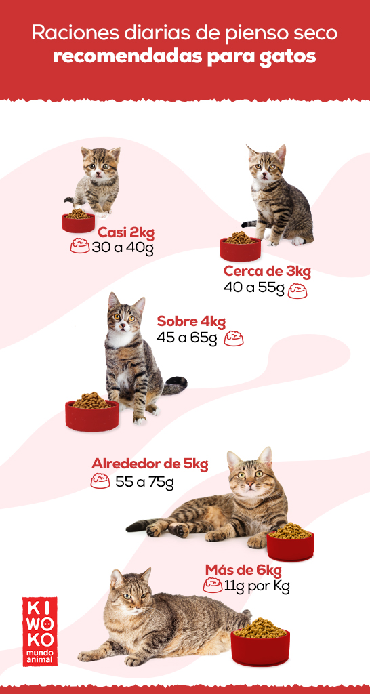

|  |
Siete consejos para mantener a tu gatito sano
Hay muchas maneras sencillas de cuidar de su salud y felicidad. Estos son algunos consejos importantes de los veterinarios y nutricionistas de Royal Canin:
Aprende a interpretar el lenguaje corporal de tu gatito para saber cuándo puede estar enfermo. Si notas que algo no está bien, habla con tu veterinario.
Asegúrate de que tu gatito reciba la nutrición adecuada a través de una dieta especializada y bien equilibrada para gatitos.
Los gatitos necesitan dormir mucho, así que asegúrate de que tengan un lugar cómodo y tranquilo para descansar.
Asegúrate de no despertar nunca a un gatito mientras duerme.
Los gatitos también necesitan hacer ejercicio y disfrutar de compañía, así que reserva tiempo para jugar con ellos.
Ayuda a que tu gatito tenga confianza, fomentando que lo cojan en brazos diferentes personas.
Sigue siempre el calendario de vacunación recomendado por el veterinario.
Desarrolla la inmunidad de tu gatito con una nutrición a medida.
Para el mantenimiento de la salud y el bienestar a largo plazo de tu gatito es fundamental el desarrollo de un sistema inmunitario óptimo durante sus primeros meses de vida. Nuestras fórmulas están científicamente desarrolladas para apoyar un crecimiento saludable de larga duración. |